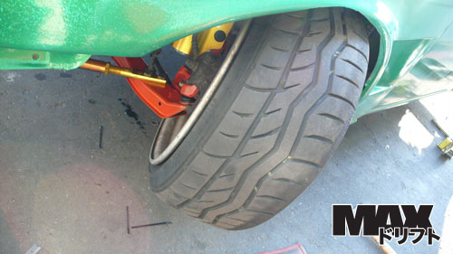

-
ive heard alot of talk about turning mods to allow the wheels to turn more for drifting? anyone done this to their z

http://www.neospeed.freeforums.org
1985 300zx n/aRegretfully Retired
1997 240sx srdetSadfully Sold
(!Attention!) If you have an 85 - 89 thats not stripped out a shell rolling body preferred contact me at330 328 2789 (ask for rick) -
New2Z...... -
Read butters build thread, mike g's, and research ackerman angle as well as leading/trailing tire angle while sliding. There is alot more to it than just gaining angle itself.
Just out of curiousity do you know how to use google or the search function on this site?"Its the s12's sexy over weight step daughter, the z31" -
Its been brought up alreadyBlown-N-Boosted wrote: New2Z......"Its the s12's sexy over weight step daughter, the z31" -
[quote]nismopu wrote:Not surprised a bit.Originally posted by Blown-N-Boosted -
hey now just striking up convo is all - i searched "turning mod" didnt pull anything besides my post.
http://www.neospeed.freeforums.org
1985 300zx n/aRegretfully Retired
1997 240sx srdetSadfully Sold
(!Attention!) If you have an 85 - 89 thats not stripped out a shell rolling body preferred contact me at330 328 2789 (ask for rick) -
Problem is rack placement. You need to move the rack forward or you will go over center and lock up the steering (after using spacers). The advantage the z31 has over the s13 is the steering knuckle remains in the same position when lowering the car (using bump steers to gain back proper geometry). There is no need for long shank ball joints, drop spindles ect… Butter did a lot of ground work and mike took it to the next level. If someone made an aftermarket LCA that allowed for tie rod clearance and the use of an s chassis adjustable tension rod that would solve some of mikes issues and 'heavier' fab work. It also may be solved by changing the geometry of the steering knuckle as well (I see in the picture thread another user has taken initiative on that). But I am unsure how much that will fuck up ackermann angle. Also a lot has to deal with the camber and toe curve thru the sweep of the turn. A lot to take into consideration, and frankly with the z31 I dont see anything else other than some trial and error. For now mike g has the best system until someone cuts up the cross member to moves the rack forward.
I have also done some brushing up on ackermann angle over the past year just from suspension development standpoint. I understand the different setups, but really I have not seen and end all. Race cars setup reverse ackermann to keep tire wear and heat down, seems like drifters more or less try to achieve zero ackermann. Mostly its on drivers preference. I know enough not to try and fuck up the factory design… or try to get back close to factory with a lowered chassis.86na - BlueZ
Shiro #366 - Kouki Monster
85t - Mr Tickles -
THANK YOU! lol wrote a book for meh. +12kadamvann3 wrote: Problem is rack placement. You need to move the rack forward or you will go over center and lock up the steering (after using spacers). The advantage the z31 has over the s13 is the steering knuckle remains in the same position when lowering the car (using bump steers to gain back proper geometry). There is no need for long shank ball joints, drop spindles ect… Butter did a lot of ground work and mike took it to the next level. If someone made an aftermarket LCA that allowed for tie rod clearance and the use of an s chassis adjustable tension rod that would solve some of mikes issues and 'heavier' fab work. It also may be solved by changing the geometry of the steering knuckle as well (I see in the picture thread another user has taken initiative on that). But I am unsure how much that will *beep* up ackermann angle. Also a lot has to deal with the camber and toe curve thru the sweep of the turn. A lot to take into consideration, and frankly with the z31 I dont see anything else other than some trial and error. For now mike g has the best system until someone cuts up the cross member to moves the rack forward.
I have also done some brushing up on ackermann angle over the past year just from suspension development standpoint. I understand the different setups, but really I have not seen and end all. Race cars setup reverse ackermann to keep tire wear and heat down, seems like drifters more or less try to achieve zero ackermann. Mostly its on drivers preference. I know enough not to try and *beep* up the factory design… or try to get back close to factory with a lowered chassis.
http://www.neospeed.freeforums.org
1985 300zx n/aRegretfully Retired
1997 240sx srdetSadfully Sold
(!Attention!) If you have an 85 - 89 thats not stripped out a shell rolling body preferred contact me at330 328 2789 (ask for rick) -
i really despise you akorn, and hope you get shooed off or banned. The moments of pleasure when i see new threads on Z31P quickly sour when i see you're the author. -
[quote]OK85ZX wrote:Originally posted by 88sinZ+1Originally posted by 88sinZ

-
I thought the offset rack spacers accomplished thatadamvann3 wrote: Problem is rack placement. You need to move the rack forward or you will go over center and lock up the steering (after using spacers).
http://www.driftworks.com/shop/suspensi … -3207.html -
[quote]Mitchd03 wrote: [quote=OK85ZX]Originally posted by 88sinZ+1Originally posted by 88sinZ(


1988 300zxt. gt35, stance, etc. Wheels: Varrstoen ES2 18x9.5 et-13 225/40. 18x10.5 et0 245/40
1990 jetta vr6'd -
'sup? -
[quote]Careless wrote:Help but not correct. All depends on how much angle you're looking for and how much you want to correct.Originally posted by adamvann386na - BlueZ
Shiro #366 - Kouki Monster
85t - Mr Tickles

Copyright © 2006–. All rights reserved. Privacy Policy